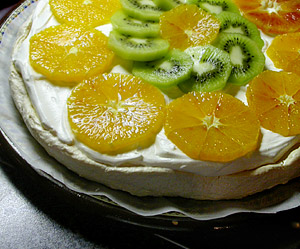

Pavlova
5,5 von 6den ofen auf 200 grad vorheizen. 5 eiweiss mit einer prise salz steif schlagen. 100 g zucker dazugeben, ebenfalls schalgen. einen teelöffel heller essig und einen esslöffel cointreaux und nochmals 50 g zucker beigeben. alles sehr steif schlafen. ein backpapier auf einem blech auslegen. eiweissmasse mit einem springformring (ohne boden) zu einem kreis formen, ring wegnehmen. sofort in den ofen schieben. jetzt den ofen auf 100 g senken und eine stunde backen. mit geöffneter ofentür die pavlova auskühlen lassen. 2 dl schlagsahne darüber verteilen und nach belieben mit saisonfürchten belegen.
